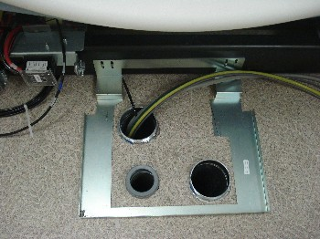
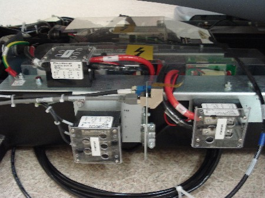
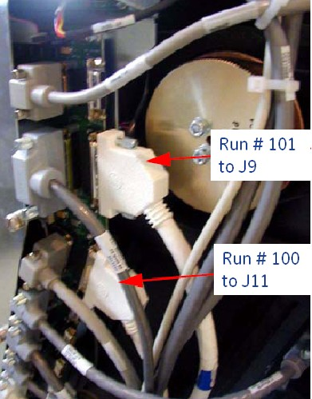

Operating Documentation
Direction 5193574-800, Rev# 22
LightSpeed 7.X Service Methods
Module Version 1.0, Version Date 4/22/10
Operating Documentation |
| Labor: | 1 person; 0.6 man-hour |
| Tools: | Standard Tool Kit |
| ||||
Potential for equipment damage.
| ||||
1. Install the rear entry cable box for routing all cables to the gantry. |  |
2. Connect the HVDC cable (Run #50) to the gantry power pan. Observe correct polarity. |  |
3. Connect the 440VAC cable (Run #51) to the gantry power pan. Observe the correct phase rotation. | |
4. Plug in the LVAC gantry power cable (Run #52) to the gantry power pan. | |
5. Connect the Ethernet cable (Run #102) and dual fiber optic cable (Run #103) to the gantry power pan. Leave about 10 feet of slack coiled under the gantry. | |
6. Route the two signal cables (Run #100 and #101) to the TGPU. Connect Run #100 to J11 and Run #101 to J9. |  |